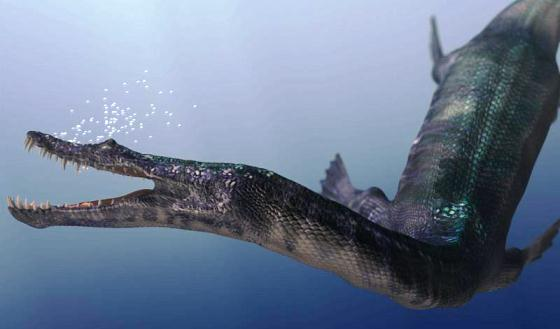
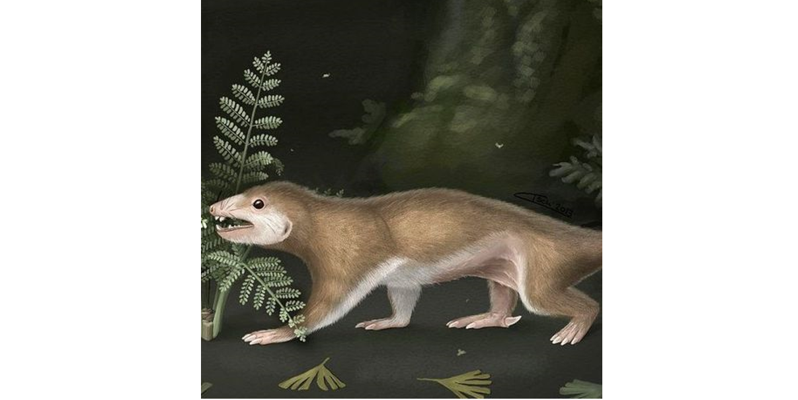
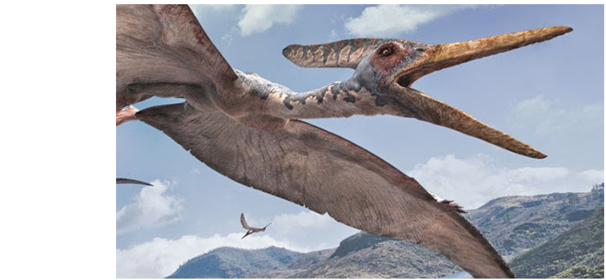

Le découpage du temps en ères et périodes géologiques.
L'ère Secondaire, aussi appelée Mésozoïque, est typiquement
l'âge des Dinosaures. Elle commence il y 252 millions d'années avec le Trias.
Le Trias (de -252 à -201 millions d'années)

Le Nothosaure, un reptile du Trias. Il a les dents acérées et mesure jusqu’à trois mètres de long. Credit : © Ciavatti.
La biodiversité est très fragilisée par la Grande Extinction au lendemain du Permien, elle peine à se redévelopper.
En mer, seule une lignée d'ammonites a survécu.
Elle se diversifie au fil des millénaires et forme de nouvelles espèces qui se répandent dans l'océan.
La Pangée est également creusée par une mer chaude et peu profonde, la Thétys.
Des reptiles marins s'y multiplient : Placodontes, Nothosaures, Plésiosaures, Ichthyosaures... Croyez-moi, vous n'auriez pas aimé croiser ces monstres !
Sur terre, les plantes ayant survécu à la Grande Extinction forment les premières forêts de conifères. Elles sont peuplées de plus en plus de dinosaures.
Ces grands reptiles chassent les ancêtres des mammifères qui s'adaptent et évoluent vers de plus petites tailles et un mode de vie nocturne.
L'extinction triassique - ou l'enfer sur Terre
Sous la Pangée,
la Terre bouillonne. Elle a accumulé trop de chaleur.

Il y a 201 millions d'années, de grands panaches de vapeur s'échappent de ses entrailles au niveau des Appalaches, sur la future Amérique du Nord.
Les bêtes fuient vers les hauteurs ou se réfugient dans l'eau.
Et là, la Pangée se déchire ! Elle doit évaucuer la chaleur sous-jacente.
Les volcans entrent en éruption, d'immenses coulées de lave se répandent et détruisent tout sur leur passage.
Elles dégagent des gazs toxiques qui empoisonnent l'atmosphère.
Vous l'avez deviné : le CO2 craché par les volcans crée
un puissant effet de serre qui réchauffe la Terre !
La planète bleue rougoie, ses forêts brûlent... Le ciel est devenu jaune et il sent le souffre - l'oeuf pourri.
En 50 000 ans, la Terre est métamorphosée.
Le CO2 en excès se dissout également dans l'océan. Alors l'eau s'adifie, elle se gorge de cendres et de déchets...
A la base de la chaîne alimentaire, le plancton disparaît peu à peu et le reste de la vie marine ne tarde pas à suivre.

Le Mégazostrodon.
Si la biodiversité décline, certaines espèces s'accrochent encore à la vie.
Les bactéries s'adaptent et pullulent dans l'océan qu'elles parent de couleurs violacées.
Sur Terre, certaines créatures deviennenent des charognards ; elles parent à la famine en mangeant les cadavres.
Pour survivre, le
Mégazostrodon se cache dans sont terrier. Il est l'ancêtre des mammifères !
Jurassic Park (de -201 à -145 millions d'années)
Après cette quatrième extinction, le Jurassique succède au Trias. C'est à cette période qu'apparaissent d'immenses dinosaures herbivores et de plus petits carnivores.

Reconstitution du nord de l'Allemagne sous le Jurassique. On y voit deux Compsognathus à l'avant-plan et un Archaeopteryx sur une branche à droite, ainsi qu'un Brachiosaurus (en marron clair) à l'arrière-plan.
Credit : © Gerhard Boeggemann.
Certains vertébrés partent à la conquêtes des airs, tels le ptérosaures et les premiers oiseaux.
Ils survolent une Terre qui a bien changé depuis le Trias.
L'océan Atlantique Nord s'ouvre et sépare la Pangée en deux continents éloignés des pôles, Laurasia et Gondwana, tandis que la mer Thétys se referme.
Le climat est tropical.
La mer de craie du Crétacé (de -145 à -65 millions d'années)
Une mer peu profonde envahit ensuite l'Europe.
De petits planctons, les coccolithophoridés, s'y entourent d'une coquille de calcaire.
A leur mort, ils se déposent sur les fonds marins et forment les futures falaises de craie du cap Blanc-Nez !

Le Pterodactyle, un ptérozaure.
La fin des Dinosaures
Le Crétacé prend fin avec la crise "KT", à la limite entre le Crétacé (K) et l'ère Tertaire (T).
Seule une terrible catastrophe pouvait venir à bout des puissants dinosaures. Que s'est-il donc passé ?
 Des éruptions volcaniques
Des éruptions volcaniques réchauffent d'abord la planète et répandent un nuage de cendres dans l'atmosphère. Les espèces luttent pour leur survie.
Et une fois la biodiversité très fragilisé,
un énorme astéroïde lui porte un coup fatal !
Ce bolide de plus de 10 km de long se fracasse dans le golfe du Mexique.
Le choc dégage une énergie phénoménale :
La Terre tremble, se fissure et propulse des blocs de roche en fusion à des kilomètres à la ronde. Bien sûr, la température grimpe en flèche. La forêt s'embrase, les incendies ravagent tout sur leur passage.
Et le nuage de cendres bloque les rayons de soleil, ce qui plonge la Terre dans la pénombre. La tendance s'inverse et le climat se refroidit.
Il fait si noir que les plantes meurent, puis les herbivores et enfin leurs prédateurs. La vie s'écroule.
S'en est fini des dinosaures, dont le règne s'achève après plus de 160 millions d'anées d'évolution. L'ère Secondaire laisse la place à l'ère Tertiaire : le Cénozoïque.
Eruptions volcaniques, astéroïde, changement climatique...
Une série de catastrophes est venue à bout des dinosaures.
Débarassés de ces terribles créatures, les mammifères sortent de leur cachette et s'épanouissent sur Terre.
La vie respire enfin. Elle ne connait plus de grandes extinctions massives ; le climat change tranquillement au rythme des âges glaciaires et interglaciaires... Jusqu'à aujourd'hui.